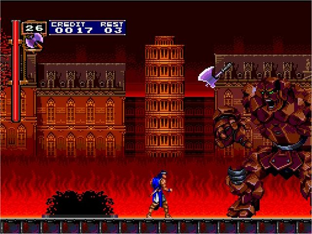
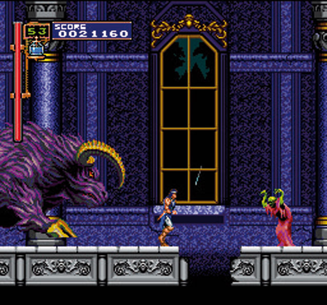
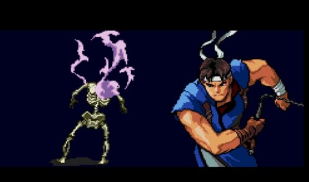

Castlevania: Rondo of Blood (悪魔城ドラキュラX 血の輪廻 ロンド Akumajō Dracula X: Chi no Rondo?) es el 10º videojuego japonés de la saga Castlevania, dirigido por Toru Hagihara, desarrollado por Konami y publicado para la plataforma NEC PC Engine el día 29/10/1993.

Una secuela directa, Castlevania: Symphony of the Night, se estrenó en 1997. El videojuego fue rehecho para Super Nintendo Entertainment System como Castlevania: Dracula X, e incluido para PlayStation Portable como parte de Castlevania: The Dracula X Chronicles. En 2008, el videojuego original se estrenó para el servicio de Consola Virtual de Wii en Japón y para las regiones de América del Norte y PAL en 2010.
El 26 de octubre de 2018, Castlevania: Rondo of Blood fue relanzado como parte de Castlevania Requiem: Symphony of the Night & Rondo of Blood para PlayStation 4. El videojuego también se incluyó en la lista de videojuegos para PC Engine Mini en 19 de marzo de 2020 y está disponible en todas las regiones.
Argumento
"En los viejos buenos tiempos, las personas desean solamente prosperidad y paz, y ciertamente, todos pensaron que los días de disturbios seguramente nunca llegarían... Pero en el otro lado de la paz y la prosperidad, invariablemente siempre existe el mal. Rechazando la prosperidad de los pueblos, corrompieron la paz".
Los que buscaban restaurar los poderes del mal y rehacer este mundo corrupto se reunieron. Las sonrisas se deslizaron por sus rostros como sus expectativas para el próximo génesis aumentaban.
Después de cien años, un ser del mal regresó una vez más. Este hombre podía cambiar su forma a la de un murciélago, un lobo, o la niebla, en particular favoreciendo actuar por la noche. Chupando la sangre de mujeres jóvenes, conservó la vida eterna. Amo del Castillo Demoníaco, dios de los malvados, el conde Drácula ha vuelto".
-Descripción del manual oficial de Castlevania: Rondo of Blood
Visión general
Castlevania: Rondo of Blood es el primer videojuego CD de la saga Castlevania, lo que permitió que más características fueran incluidas, como una banda de sonido con calidad de CD y escenas de corte animadas. Las secuencias apertura, final, y varias escenas realizadas en un estilo visual dibujado a mano están incluidas en el videojuego. Sin embargo, en aquel momento esto no fue considerado como siendo una decisión muy popular. Varios detalles en el terreno se encuentran más pulidos que las entradas anteriores, y el comportamiento de los enemigos es más elaborado. Por ejemplo, los personajes jefes en el videojuego llevarán a cabo un ataque final único cuando su barra de vitalidad sea agotada. Si el jugador no sufrió ningún daño durante el combate y se las arregla para evitar este ataque, se obtiene un "Bonus Perfecto"
La mecánica de recoger mejoras con el fin de potenciar el látigo Matavampiros (Vampire Killer), que hasta ese momento era un elemento básico de la saga Castlevania, había sido retirada. Una nueva característica es Item Crash, un ataque de armas secundarios durante el cual el jugador se vuelve invencible momentáneamente y realiza un ataque poderoso, a expensas de una gran cantidad de los corazones acumulados. Al igual que en el videojuego Castlevania III: Dracula's Curse, se ha implementado un sistema de ramificación de rutas a seguir pero con algunas variaciones. A diferencia del anterior, no es posible elegir entre dos caminos en entre escenarios. Más bien, existen dos maneras de proceder a través de un escenario, una de las rutas estando oculta. Encontrar este camino requiere varios trucos, tales como la destrucción de una pared especifica, deliberadamente caer en uno de los pozo, y así sucesivamente. Además, existen cuatro personajes que han sido secuestrados por Drácula y requieren ser rescatados. Uno de estos personajes, Maria Renard, se vuelve un personaje disponible después de ser rescatada. Ella ataca con habilidades mágicas caprichosas, como lanzar palomas a los enemigos, esconderse en un caparazón de tortuga y otros ataques basados en animales. Cuando se juega como Maria, las escenas en el rescate de los otros personajes, la conversación con Drácula, el final, así como la pantalla del GAME OVER se vuelven más alegres en el tono.

Una vez que se completa un escenario, puede ser seleccionado desde la opción "STAGE SELECT" en la pantalla de archivos en el inicio del videojuego. Al elegir la opción "PLAYER SELECT" se permite cambiar a Maria como personaje disponible. Otras cosas que se muestran son el porcentaje de finalización, la cantidad de CONTINUES restantes,"SOUND TEST", y "TECHNIQUE". Esta última opción se trata de vídeos que muestran la estrategia correcta para usar contra los enemigos jefes. Estos vídeos pueden ser desbloqueados mediante la recolección de ciertas cantidades de dinero.
En su época nunca fue publicado oficialmente fuera de la región de Japón, a pesar de críticas positivas de los fans y los críticos especializados. Éste videojuego es a menudo considerado un ejemplar claro en cuanto a porqué la plataforma NEC PC Engine japonesa tuvo un mejor desempeño que su contraparte norteamericana, la plataforma TurboGrafx-16.
También existe un videojuego de la saga Castlevania que se considera que es una especie de semi-remake/semi-secuela del videojuego Castlevania: Rondo of Blood, llamado Castlevania: Dracula X (llamado Akumajō Dracula XX originalmente en Japón y Vampire Kiss en las regiones de Europa y Australia) que fue publicado para la plataforma Super Nintendo Entertainment System dos años más tarde, pero no fue bien recibido por los fans y los críticos especializados, que fácilmente notaron diferencias sustanciales y negativas con el título original. A diferencia del videojuego original para la plataforma NEC PC Engine, si fue publicado en las regiones occidentales, pero como un videojuego sustituto, en lugar de ser simplemente exclusivo de la región de Japón, que originalmente fue publicado allí como una secuela no-canónica.
Como resultado, la versión de la plataforma NEC PC Engine Super CD es considerada uno de los sellos distintivos de la saga Castlevania.
Dracula x Chronicles
Castlevania: The Dracula X Chronicles llamado Akumajō Dracula X Chronicle (悪魔城ドラキュラ Xクロニクル Akumajō Dorakyura Ekkusu Kuronikuru?) originalmente en Japón, es un videojuego de la saga Castlevania para la plataforma PlayStation Portable, publicado el día 23/10/20087 en EE.UU. y el día 08/10/2007 en Japón. Fue publicado el día 15/02/2008 en Europa y el día 09/04/2008 en Australia y Nueva Zelanda.
Esencialmente Castlevania: The Dracula X Chronicles es un remake en 2.5D del videojuego Castlevania: Rondo of Blood, pero que aún conserva el modo de juego con desplazamiento lateral (sidescrolling) de la versión original. Incluye una versión porteada del videojuego original para la plataforma NEC PC Engine, así como una versión porteada del videojuego Castlevania: Symphony of the Night para la plataforma Sony PlayStation.
Castlevania: The Dracula X Chronicles representa la primera vez que el videojuego Castlevania: Rondo of Blood ha sido oficialmente publicado fuera de la región de Japón.
Mientras que la versión original del videojuego Castlevania: Rondo of Blood contó con ilustraciones genéricas de estilo anime, Castlevania: The Dracula Chronicles X cuenta con nuevos diseños más sofisticados para esos mismos personajes por parte del mismo artista que se encargo del diseño de personajes en videojuegos anteriores para el videojuego Castlevania: Symphony of the Night, Ayami Kojima.
Sinopsis
Hace tiempo los humanos vivían en paz y armonía. Nadie pensaba que habría una amenaza en el futuro.
A la sombra de la paz y el desarrollo, seguía y sigue habiendo mal. La gente empezó a rechazar el desarrollo y a ver la paz como una degeneración.
Estamos aquí presentes para invocar a los poderes del mal con nuestra sangre maldita.
Queremos que gobiernen el mundo y esperen alegremente su desaparición.
El primer mal ha despertado después de 100 años.
Puede adoptar la forma de murciélago, lobo o niebla. Adora la noche. Chupa la sangre de mujeres jóvenes y vive eternamente.
El amo del castillo del demonio, el señor del mal, el Conde Drácula ha despertado.-Descripción de la secuencia de introducción
Diferencias
Castlevania: The Dracula X Chronicles es estructuralmente similar al videojuego original, pero ha sido reconstruido para retratar una nueva estética basada en 3D. La dirección artística anime de la versión original ha sido sustituida, y el diseño de personajes fue manejado por la artista veterana en la saga Ayami Kojima. La historia y escenas cinemáticas están completamente re-modeladas con nuevas actuaciones de voz y con varias modificaciones. Cabe destacar que la conversación entre Drácula y Richter ahora coincide exactamente con el que se presenta durante el prólogo del videojuego Castlevania: Symphony of the Night, y se lleva a cabo antes del inicio de la batalla, en lugar de después de esta, como era originalmente en tal caso. Por otra parte, el diálogo de Maria ha sido reescrito para ser menos abiertamente humorístico con el fin de que coincida con el tono más serio de la nueva versión. El diseño de escenarios fue barajado un poco, con ciertos candelabros ahora cuando son destruidos soltando diferentes elementos y algunos fondos han sido completamente alterados en algunos casos, por ejemplo, en la sala antes del jefe Minotauro en el Escenario 3'. La banda sonora fue sometida a remixes con contribuciones de Michiru Yamane y otros artistas. Algunos temas musicales del videojuego original como Dark Desires y The Nest han sido sustituidos por Tues Deus Meus (una versión arreglada de Dark Desires) y Moon Fight del videojuego Akumajō Dracula (Sharp X68000). Un Modo Boss Rush y opción Prueba de Sonido (Sound Test) se han añadido al menú. Por último, el Escenario 5' ha sido alterado y un jefe único, Hidra, es combatido al llegar a su final.
Debido a que la nueva versión no es una portabilidad exacta de sprite-por-sprite de la versión original, algunas mecánicas de jugabilidad se han modificado ligeramente, disminuyendo la dificultad general del videojuego. Sin embargo, en algunos casos la dificultad se ha incrementado considerablemente (la batalla contra Dullahan es un buen ejemplo) y algunos escenarios se han ampliado con nuevas áreas para explorar, algunas de las cuales incluyen nuevos puzzles para resolver. Otras nuevas adiciones incluyen ciertos obstáculos que sólo pueden ser anulados después de obtener los artículos específicos.
Desarrollo
Koji Igarashi dijo una de las motivaciones para publicar Castlevania: The Dracula X Chronicles fue debido a la popularidad del videojuego Castlevania: Symphony of the Night, desarrollado como la continuación del videojuego Castlevania: Rondo of Blood. Aunque los aficionados occidentales ya tenían acceso al videojuego Castlevania: Symphony of the Night, nunca tuvieron la oportunidad de experimentar la precuela. Además, aunque el videojuego Castlevania: Symphony of the Night fue generalmente considerado como el gran punto de giro decisivo de la saga Castlevania, Igarashi considera que en su lugar lo seria el videojuego Castlevania: Rondo of Blood. Queriendo a los aficionados experimentaran la misma sensación que sintió al jugar el videojuego por primera vez, fue algo que también contribuyó a su decisión para la realización de la versión remake.
En cuanto a la elección para la plataforma PlayStation Portable, explicó que quería rehacer por completo el videojuego en 3D, con el fin de atraer a la nueva generación de jugadores y los fans de la saga Castlevania. Junto con el desarrollo 3D del videojuego, surgieron una gran cantidad de inconvenientes técnicos. Se realizó una gran cantidad de experimentación, pero el equipo no estaba satisfecho con los resultados. Con la llegada de la plataforma PlayStation Portable, se decidió a seria la plataforma elegida debido al potencial que tenía el sistema.
En vez de hacer una conversión del videojuego completamente fiel, se decidió modificar el videojuego en ciertas áreas. Una de estas áreas fue el Escenario 5', diseñado originalmente por Shingo "Seabass" Takatsuka. Debido al desagrado del equipo con el diseño del escenario, que tenia elementos de escenarios anteriores y los combinaba en un solo escenario, se decidió hacer una remodelación completa.
Musica
La música en esta ocasión daría un poco de estilo pop, pero todavía contiene esa sensación Castlevania clásica de rock progresivo de los videojuegos anteriores. Dado que es un videojuego en formato CD, guitarras en vivo fueron traídas para respaldar los sintetizadores de sonido y ritmos de tambor y nítidas. Temas musicales como Vampire Killer, Bloody Tears y Beginning fueron todos también re-arreglados para este videojuego.
La banda sonora fue lanzado en un conjunto de dos discos (el segundo disco con la banda sonora del videojuego Castlevania: The New Generation) en el año 1994 y desde entonces se ha sacado de la producción, por lo que es tan difícil de encontrar como lo es el propio videojuego.

Legado
El videojuego ha tenido un notable impacto y es algo así como un punto de inflexión en la saga Castlevania. Los siguientes videojuegos serián influenciados por su nivel en gráficos, con muchos sprites tomados casi directamente desde el propio videojuego. También es uno de los últimos videojuegos de la saga Castlevania de la 'vieja escuela', con una jugabilidad más basada en escenarios lineales, en contraposición al estilo 'Metroidvania' introducido en la secuela directa extremadamente popular de este videojuego, Castlevania: Symphony of the Night.
Es muy buscado en su formato original por muchos de los fans de la saga Castlevania, pero debido a la falta de una publicación internacional, las copias disponibles son muy raras de conseguir. A menudo se vende hasta por más de USD 100 en eBay. Se ha actualizado a una versión videojuego 2.5D en el videojuego Castlevania: The Dracula X Chronicles en la plataforma PlayStation Portable, que también contiene la versión original, así como su secuela, Castlevania: Symphony of the Night. Una versión porteada directamente de la versión original también se puede encontrar en la Consola Virtual para la plataforma Nintendo Wii y es considerado un título de importación fuera de la región de Japón. Aunque no existe una traducción hecha fuera de Japón, la versión en inglés de la Consola Virtual esta alterada por que contiene el mismo audio secuencia de introducción de la versión de PSP y la versión censurada del Hombre-Lobo.
Además, Richter Belmont, el protagonista principal de Castlevania: Rondo of Blood, también hace una aparición especial en el videojuego de lucha Super Smash Bros. Ultimate para Nintendo Switch, estrenado el 7 de diciembre de 2018. Se desempeña como Echo Fighter del debutante Simon Belmont. El videojuego también incorpora varios elementos de Castlevania: Rondo of Blood en el escenario del castillo de Drácula con temática de Castlevania, así como la adición de pistas musicales característicos de Castlevania, incluida un remix del tema musical de Richter, "Opposing Bloodlines". El escenario del castillo de Drácula también incluye la versión del Hombre Lobo vista en Castlevania: Rondo of Blood como un personaje de fondo. Drácula, que aparece como un personaje jefe en el escenario, también deriva su diseño de su personaje y los ataques de los que tenia en Castlevania: Rondo of Blood.
Personajes Rondo Of Blood
Richter
El héroe principal, portador del látigo Matavampiros (Vampire Killer) y voluntario para destruir a Drácula.
Maria
Una pequeña jovencita que ha sido capturada por Drácula y puede utilizar espíritus animales.
Annette
La prometida de Richter que ha sido capturado por Drácula.
Tera
Una monja de la iglesia local que también ha sido secuestrada.
Iris
La hija de un doctor y la cuarta de las cautivas.
Shaft
Un sacerdote oscuro que revive a Drácula.
Drácula
El Amo del Castillo Demoníaco, antagonista principal y personaje jefe final.
Personajes Dracula x chronicles
Richter
Cazador de vampiros de 19 años, Richter es un descendiente directo de Simon Belmont. Armado con un inquebrantable sentido de la justicia y el látigo Belmont ancestral, Richter también puede cargar hachas y puñales.
Maria
Una chica con lazos de sangre con el clan Belmont. Después de ser liberada de su aprisionamiento en el Escenario 2, se une a Richter como una aliada también disponible para el jugador. Quizás debido a su juventud, doce años de edad, Maria es muy cándida y sincera, y además odia perder.
Annette
La prometida de Richter. Mantenida como rehén en algún lugar en el Castillo de Drácula. De carácter fuerte y no le gustan las injusticias. Annette tiene una personalidad muy agradable y es amable con todos los que la rodean.
Tera
Una monja en la iglesia del pueblo, también secuestrada en el Castillo de Drácula. Ella es cálida, alegre y con un alma apasionada.
Iris
Hija de un médico y mantenida cautiva en el Castillo de Drácula. Una persona brillante y cuidadora, ella busca curar a los demás.
Shaft
Un sacerdote oscuro que intenta revivir al conde Drácula.
Drácula
Amo y señor de la fortaleza maligna, y raíz de toda la maldad. Aunque sin iguales en su crueldad, mantiene un aire majestuoso de elegancia y grandeza.